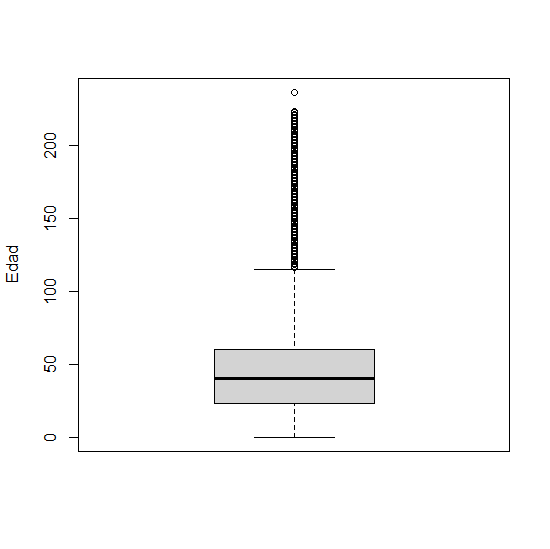
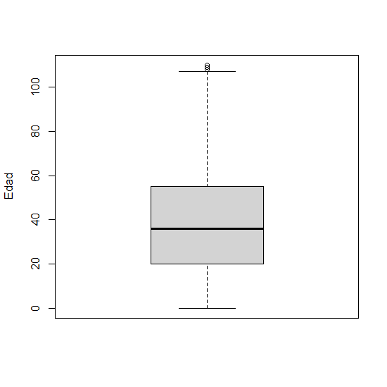
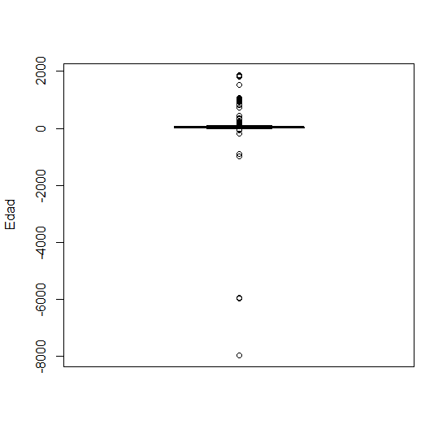

| Frecuencia | Porcentaje (%) | |
|---|---|---|
| Vivos | 22.061.202 | 83 |
| Fallecidos | 4.511.276 | 17 |
| Total | 26.572.478 | 100 |

Mesa de Procesamiento
Proyecto Estratégico Registro Estadístico de Población (REP)
Resultados Preliminares
Febrero 2024
Introducción
Objetivo del REP:
“Compilar datos de la población permitiendo su conteo, localización y caracterización demográfica básica. Este permitirá brindar acceso a datos poblacionales desagregados, oportunos y de calidad, derivando en la disminución de costos asociados al levantamiento de datos. Además, la instalación del REP permitirá reducir las cargas en entrevistadores e informantes, entre otros beneficios.”.
Introducción
Temas:
Caracterización de los resultados brutos de los registros administrativos del Servicio de Registro Civil e Identificación (SRCeI), Fondo Nacional de Salud (FONASA) y la Superintendencia de Seguridad Social (SUSESO).
Analizar indicadores de calidad.
Describir el flujo del pre-procesamiento de las bases.
Mostrar los resultados preliminares post-procesamiento e integración de bases.
Consideraciones finales
Frecuencias Brutas SRCeI
Se considera como la fuente de información punto de partida por excelencia
Base amplia de información que incluye datos de identificación, caracterización demográfica (sexo, fecha de nacimiento, fecha de defunción, fecha de matrimonio, entre otros) y localización.
Información de las personas vivas y fallecidas reportadas
Frecuencias Brutas SRCeI
- Según sexo
| Sexo | Frecuencia | Porcentaje (%) |
|---|---|---|
| Masculino | 11.156.007 | 50.6 |
| Femenino | 10.905.105 | 49.4 |
| Indeterminado | 50 | 0.0 |
| No binario | 14 | 0.0 |
| Sin información | 26 | 0.0 |
| Total | 22.061.202 | 100.0 |
Frecuencias Brutas SRCeI
- Según nacionalidad
| Nacionalidad | Frecuencia | Porcentaje (%) |
|---|---|---|
| Chileno | 19.752.058 | 89.5 |
| Extranjero | 2.193.689 | 9.9 |
| Nacionalizado | 26.193 | 0.1 |
| Sin información | 89.262 | 0.4 |
| Total | 22.061.202 | 99.9 |
Frecuencias Brutas SRCeI
- Según edad
| Edad | Frecuencia | Porcentaje (%) |
|---|---|---|
| 0 a 9 | 2.063.334 | 9.4 |
| 10 a 19 | 2.509.540 | 11.4 |
| 20 a 29 | 2.845.407 | 12.9 |
| 30 a 39 | 3.435.804 | 15.6 |
| 40 a 49 | 2.872.310 | 13.0 |
| 50 a 59 | 2.753.802 | 12.5 |
| 60 a 69 | 2.220.073 | 10.1 |
| 70 a 79 | 1.322.012 | 6.0 |
| 80 a 89 | 641.893 | 2.9 |
| 90 a 99 | 269.961 | 1.2 |
| 100 a 110 | 251.774 | 1.1 |
| Sin información | 17.646 | 0.1 |
| >110 | 857.646 | 3.9 |
| Total | 22.061.202 | 100.1 |
Indicadores de calidad SRCeI
- Tasa de completitud: proporción entre el número de celdas con datos y el número total de celdas requeridas para una variable específica en las bases de los registros administrativos seleccionados.
| Variable | Frecuencia | Porcentaje | Tasa de completitud (%) |
|---|---|---|---|
| run | 0 | 0.0 | 100.0 |
| nombre | 583 | 0.0 | 100.0 |
| sexo | 26 | 0.0 | 100.0 |
| sexo_ant | 80.196 | 0.4 | 99.6 |
| nacionalidad | 89.262 | 0.4 | 99.6 |
| pais_origen | 115.455 | 0.5 | 99.5 |
| lugar_nacimiento | 859.681 | 3.9 | 96.1 |
| fecha_nacimiento | 17.646 | 0.1 | 99.9 |
| fecha_defuncion | 0 | 0.0 | 100.0 |
| calle | 5.224.556 | 23.7 | 76.3 |
| comuna | 6.118.848 | 27.7 | 72.3 |
Indicadores de calidad SRCeI
- Tasa de valores atípicos: se define como el porcentaje de datos atípicos sobre el total de datos.

| Estadísticas descriptivas de edad |
|---|
| Min. : 0.00 |
| 1st Qu.: 23.00 |
| Median : 40.00 |
| Mean : 43.93 |
| 3rd Qu.: 60.00 |
| Max. :236.00 |
Indicadores de calidad SRCeI
Proporción de registros duplicados: La proporción de registros duplicados (PRD) es un indicador que revela la cantidad de unidades duplicadas en un conjunto de datos, proporcionando información valiosa sobre su calidad.
Existen 611 registros con RUN duplicado, lo cual equivale aproximadamente al 0.003% del total.
Este bajo porcentaje permite observar que la duplicidad según RUN no constituye un problema relevante en la base de datos del Registro Civil.
En la mayoría de los casos, la duplicidad se genera debido a entregas sucesivas de parte del proveedor de datos en las que, en lugar de actualizar la información ya existente, se generaron filas nuevas.
Indicadores de calidad SRCeI
Validación de RUN: Una variable de gran importancia para la construcción del REP es el RUN, ya que a partir de este se establecen las conexiones con los demás registros. Para evaluar, la calidad del RUN se debe determinar:
Si el dígito verificador corresponde al RUN informado
Que el largo del mismo esté dentro de cierto rango.
| Validez | Frecuencia | Porcentaje |
|---|---|---|
| Válido | 21.568.836 | 97.8 |
| Inválido | 492.366 | 2.2 |
| Total | 22.061.202 | 100.0 |
Frecuencias Brutas FONASA
El registro de FONASA es particularmente relevante para el proyecto REP dado que al contener información sobre los beneficiarios de la salud pública, abarca un universo de más de 15 millones de personas por mes.
Este registro no solo incluye personas con un RUN otorgado por el SRCeI, sino que puede contener personas a quienes aún no se les haya otorgado este identificador.
En esos casos, el identificador será un “RUT provisorio” provisto por FONASA que solo servirá para la habilitación de la persona para recibir prestaciones de salud.
Frecuencias Brutas FONASA
- Según sexo
| Sexo | Frecuencia | Porcentaje |
|---|---|---|
| Hombres | 8.453.186 | 48.2 |
| Mujeres | 9.079.090 | 51.8 |
| Indeterminado | 1.011 | 0.0 |
| Total | 17.533.287 | 100.0 |
Frecuencias Brutas FONASA
- Según nacionalidad
| Nacionalidad | Frecuencia | Porcentaje |
|---|---|---|
| Chileno | 15.727.627 | 89.7 |
| Extranjero | 1.805.660 | 10.3 |
| Total | 17.533.287 | 100.0 |
Frecuencias Brutas FONASA
- Según edad
| Edad | Frecuencia | Porcentaje (%) |
|---|---|---|
| 0 a 9 | 1.834.824 | 10.5 |
| 10 a 19 | 2.251.628 | 12.8 |
| 20 a 29 | 2.620.432 | 14.9 |
| 30 a 39 | 2.918.648 | 16.6 |
| 40 a 49 | 2.258.577 | 12.9 |
| 50 a 59 | 2.155.572 | 12.3 |
| 60 a 69 | 1.804.944 | 10.3 |
| 70 a 79 | 1.071.256 | 6.1 |
| 80 a 89 | 481.184 | 2.7 |
| 90 a 99 | 111.655 | 0.6 |
| 100 a 110 | 9.952 | 0.1 |
| >110 | 14.615 | 0.1 |
| Total | 17.533.287 | 99.9 |
| Edad_cor | Frecuencia | Porcentaje (%) |
|---|---|---|
| 0 a 9 | 1.942.317 | 11.1 |
| 10 a 19 | 2.250.569 | 12.8 |
| 20 a 29 | 2.661.223 | 15.2 |
| 30 a 39 | 2.889.488 | 16.5 |
| 40 a 49 | 2.253.425 | 12.9 |
| 50 a 59 | 2.150.065 | 12.3 |
| 60 a 69 | 1.777.465 | 10.1 |
| 70 a 79 | 1.039.467 | 5.9 |
| 80 a 89 | 457.378 | 2.6 |
| 90 a 99 | 102.535 | 0.6 |
| 100 a 110 | 9.355 | 0.1 |
| Total | 17.533.287 | 100.1 |
Indicadores de calidad FONASA
- Tasa de completitud
| Variable | Frecuencia | Porcentaje | Tasa de completitud (%) |
|---|---|---|---|
| run | 0 | 0.0 | 100.0 |
| nombre | 165.356 | 0.9 | 99.1 |
| apellido | 165.724 | 0.9 | 99.1 |
| segundo_apellido | 510.163 | 2.9 | 97.1 |
| sexo | 0 | 0.0 | 100.0 |
| fecha_nacimiento | 397 | 0.0 | 100.0 |
| nacionalidad | 0 | 0.0 | 100.0 |
Indicadores de calidad FONASA
- Tasa de valores atípicos

| Estadísticas descriptivas de edad_cor |
|---|
| Min. : 0.00 |
| 1st Qu.: 20.00 |
| Median : 36.00 |
| Mean : 37.85 |
| 3rd Qu.: 55.00 |
| Max. :110.00 |

| Estadísticas descriptivas de edad |
|---|
| Min. :-7968.0 |
| 1st Qu.: 21.0 |
| Median : 36.0 |
| Mean : 38.4 |
| 3rd Qu.: 55.0 |
| Max. : 1870.0 |
Indicadores de calidad FONASA
- Proporción de registros duplicados
No se identifican casos duplicados en el registro de FONASA, lo anterior mantiene coherencia con el procesamiento previo que realiza FONASA para que no existan RUNes duplicados.
Indicadores de calidad FONASA
- Validación de RUN
| Validez | Frecuencia | Porcentaje |
|---|---|---|
| Válido | 17.524.135 | 99.9 |
| Inválido | 9.152 | 0.1 |
| Total | 17.533.287 | 100.0 |
Frecuencias brutas SUSESO
Recopila antecedentes de varios temas, como de los trabajadores protegidos, cotizantes, pensionados y empresas
En el marco del REP, la tabla más relevante en la exploración es A01: Trabajadores protegidos, la que contiene el detalle de los antecedentes generales de todos los trabajadores cubiertos por dicho organismo administrador.
Las frecuencias iniciales fueron construidas a partir de información que contiene el sexo y la nacionalidad de las personas trabajadoras, depurando los registros no válidos, como los provenientes de la reforma previsional.
Frecuencias brutas SUSESO
- Según sexo y nacionalidad
| Sexo | Frecuencia | Porcentaje |
|---|---|---|
| Hombres | 5.725.784 | 57.5 |
| Mujeres | 4.223.890 | 42.4 |
| Sin información | 3.975 | 0.0 |
| Total | 9.953.649 | 99.9 |
| Nacionalidad | Frecuencia | Porcentaje |
|---|---|---|
| Chilenos | 6.083.676 | 61.1 |
| Extranjeros | 3.501.622 | 35.2 |
| Sin información | 368.351 | 3.7 |
| Total | 9.953.649 | 100.0 |
Indicadores de calidad SUSESO
- Tasa de completitud
| Variable | Frecuencia | Porcentaje | Tasa de completitud (%) |
|---|---|---|---|
| Run | 0 | 0.0 | 100.0 |
| Sexo | 3.975 | 0.0 | 100.0 |
| Nacionalidad | 368.351 | 3.7 | 96.3 |
Indicadores de calidad SUSESO
- Proporción de registros duplicados
Existen 495.180 registros con RUN duplicado, lo cual equivale aproximadamente al 5,6% de los registros.
En la mayoría de los casos, la duplicidad se genera debido a que un trabajador puede cotizar en más de una empresa, apareciendo varias veces en la base.
Indicadores de calidad SUSESO
- Validación de RUN
Los resultados muestran que de los 9.953.649 registros, todos tienen un RUN válido.
Pre-procesamiento SRCeI
El pre-procesamiento del Registro Civil consistió en 4 pasos:
Remover RUNes inválidos: el porcentaje de RUNes no válidos era de un 2,2%. Al eliminar dichos registros queda una base con 21.568.836 observaciones.
Remover RUNes duplicados: existe una baja tasa de RUNes duplicados (0,003%). La deduplicidad se realizó de manera aleatoria, quedando con 21.568.225 registros
Editar valores inválidos en la variable edad: se hace un procesamiento a la fecha de nacimiento para luego volver a calcular la edad final, luego se establece un umbral para hacer el corte. Se crea una variable que identifica si la edad es válida tanto para la edad corregida del Registro Civil como la de FONASA, en caso de que la edad no sea válida en el Registro Civil le vamos a creer a FONASA.
Remover outliers de edad: quedamos con un total de 20.856.194 personas.
Pre-procesamiento SUSESO
Como parte del pre-procesamiento de SUSESO se realizan las siguientes depuraciones:
Identificar duplicados
Remover roles de prueba desde SUSESO
Quedamos con un total de 8.834.007 de registros.
Pre-procesamiento FONASA
Dado que no existen duplicados, solamente se hizo una depuración de los runes inválidos
Obtenemos un total 17.524.135 de registros.
Integración
Dentro del contexto del REP, la integración busca vincular información de la misma persona usando diferentes fuentes a través de la comparación de datos y la aplicación de criterios y reglas, que permitirían identificar personas únicas.
Se utilizó el método determinístico el cual requiere coincidencia exacta en algún identificador, en este caso, sería el RUN.
Se consideró como base pivote el Registro Civil
El resultado fue un match parcial, es decir, existen registros dentro de SUSESO y FONASA para los cuales no se encontró un pareo en la tabla pivote del Registro Civil
Integración
Tabla resumen:
| RRAA | Match | Sin match | Total | % match | % sin match |
|---|---|---|---|---|---|
| SUSESO | 8.504.409 | 329.598 | 8.834.007 | 96.3 | 3.7 |
| FONASA | 16.662.845 | 861.290 | 17.524.135 | 95.1 | 4.9 |
| Total | 25.167.254 | 1.190.888 | 26.358.142 | - | - |
Conteo final de personas
Se lleva a cabo una última deduplicación dado que existen RUNes duplicados entre SUSESO y FONASA.
El conteo final para el mes de julio 2023 alcanza a 22.104.971 personas.
Este total no excluye a quienes no son residentes activos. Dicha condición se revisará durante 2024
Según sexo, observamos que la proporción de mujeres es levemente mayor a la de hombres.
| Sexo | Frecuencia | Porcentaje |
|---|---|---|
| Hombres | 10.990.376 | 49.7 |
| Mujeres | 11.113.709 | 50.3 |
| Indeterminado | 752 | 0.0 |
| Sin información | 134 | 0.0 |
| Total | 22.104.971 | 100.0 |
Conteo final de personas
Según nacionalidad, los extranjeros suman alrededor de 2.9 millones de personas, representando al 13,2% del total.
La estimación oficial de población extranjera del INE y Sermig para diciembre 2022 alcanzó 1.625.074 personas
| Nacionalidad | Frecuencia | Porcentaje |
|---|---|---|
| Chilenos | 19.146.431 | 86.6 |
| Nacionalizados | 22.092 | 0.1 |
| Extranjeros | 2.910.540 | 13.2 |
| Sin información | 25.908 | 0.1 |
| Total | 22.104.971 | 100.0 |
Conteo final de personas
- Ya no existen outliers
- Según edad, al igual que en las frecuencias brutas, el grupo etario de 30 a 39 tiene la mayor representación.
- Alto porcentaje de personas sin información en la variable edad (4,9%)
| Edad | Frecuencia | Porcentaje (%) |
|---|---|---|
| 0 a 9 | 2.183.090 | 9.9 |
| 10 a 19 | 2.505.862 | 11.3 |
| 20 a 29 | 2.898.775 | 13.1 |
| 30 a 39 | 3.415.344 | 15.5 |
| 40 a 49 | 2.868.301 | 13.0 |
| 50 a 59 | 2.739.550 | 12.4 |
| 60 a 69 | 2.179.102 | 9.9 |
| 70 a 79 | 1.277.217 | 5.8 |
| 80 a 89 | 610.993 | 2.8 |
| 90 a 99 | 258.461 | 1.2 |
| 100 a 110 | 93.895 | 0.4 |
| Sin información | 1.074.381 | 4.9 |
| Total | 22.104.971 | 100.2 |
Consideraciones finales
El total de personas integradas a través del RUN da cuenta de 22.104.971 personas. Según las proyecciones de población del INE al 2023 la población alcanza 19.960.889 personas, por lo que estaríamos sobreestimando al total de la población según estas proyecciones.
Según sexo, se observa que las mujeres tienen una mayor representatividad (50,3%) en comparación a los hombres (49,7%). Esta composición es coherente según las proyecciones del INE, donde las mujeres representan al 50,7% y los hombres al 49,3%.
Se observa que los resultados respecto a la nacionalidad no mantienen coherencia con los del SERMIG.
Con respecto a SUSESO, se observan coherencias respecto a la composición de las tasas de participación según sexo (mayoría hombres) y nacionalidad (mayoría chilenos).
Consideraciones finales
Para el 2024 resaltan al menos cinco líneas de trabajo:
Perfeccionar la identificación de a quienes sumar y a quienes restar (por ejemplo identificación de residentes (activos e inactivos) usando señales de vida).
Desarrollo y pruebas de integración propabilística manteniendo los espacios de cooperación internacional y nacional (uso de SPLINK con apoyo de Reino Unido).
Profundizar la desagregación geográfica a nivel comuna.
Gestionar el acceso mediante convenios a un mayor número de registros administrativos priorizados, al menos Servel, Superintendencia de Salud y Educación, tomando en cuenta la importancia de mantener contacto con los proveedores.
Continuar avanzando en la definición de procesos y evaluación de calidad de los insumos, a la par de estudiar la coherencia con otras fuentes de información.

Mesa de Procesamiento
Proyecto Estratégico Registro Estadístico de Población (REP)
Resultados Preliminares
Febrero 2024